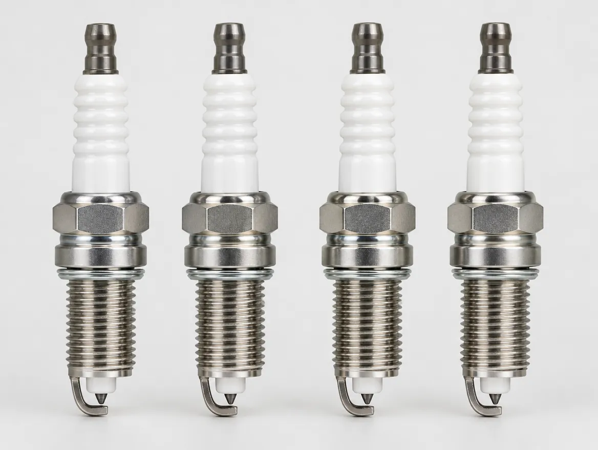
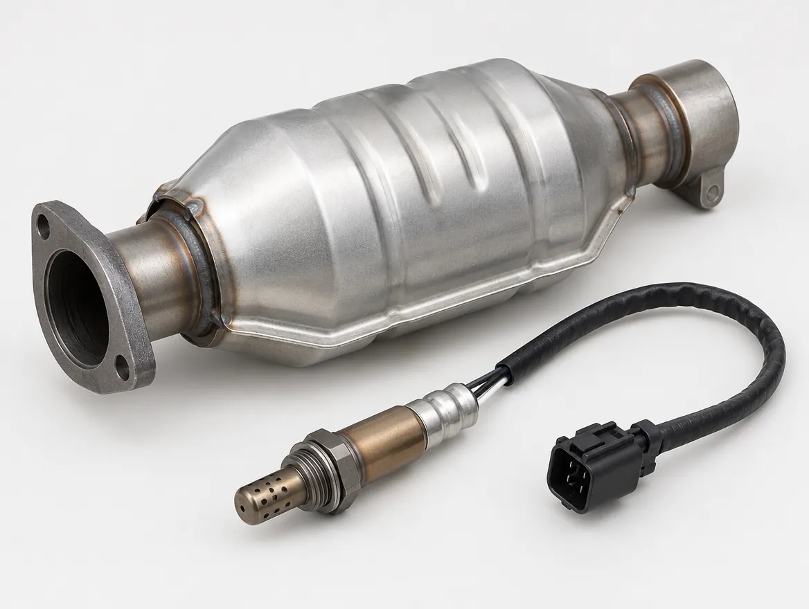
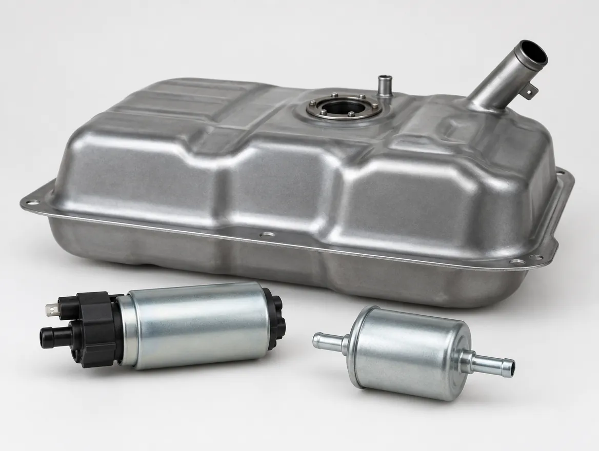

General Auto Repair
Repairs big and small. If your car is making a noise, leaking or running rough, call and tell us what is going on.
General repairs, engine work, drivetrain, transmissions, fuel systems and exhaust.
Repairs big and small. If your car is making a noise, leaking or running rough, call and tell us what is going on.
Engine repair services, from mechanical problems and overheating to performance engine work.
Full engine replacement when a repair no longer makes sense.
Cylinder head and engine block repair, including head gaskets.
Spark plug replacement to fix misfires and keep the engine running smoothly.

Muffler and exhaust system repair, including hangers, pipes and leaks.

Automatic and manual transmission repairs.
Differential service and repair.
Axle and CV axle repair and replacement.
Fuel system cleaning and repair.
Gas tank repair and replacement.

Call us Mon–Fri 9–6 · Sat 9–1. We will tell you what we can do.